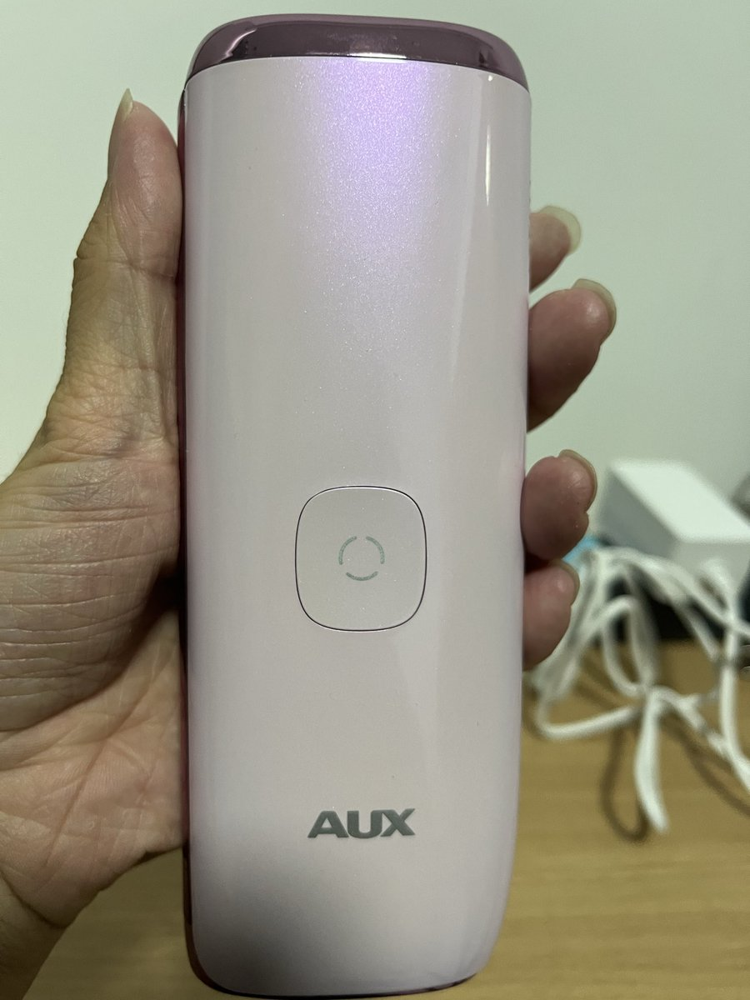
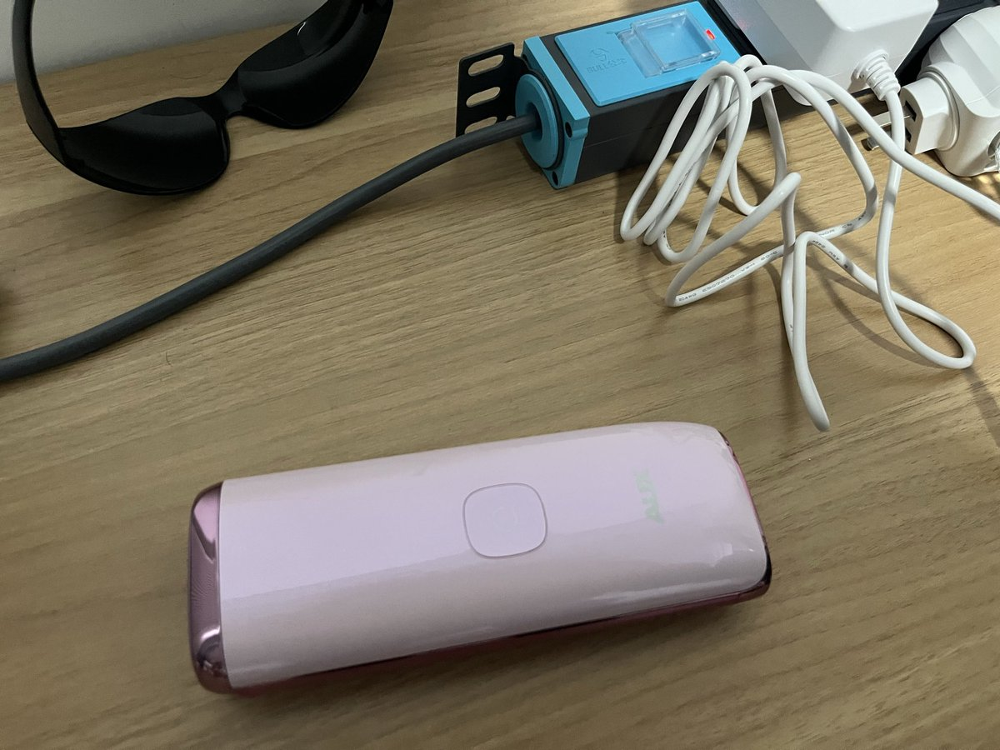

璋🏳️⚧️
@10Lystra
@_a_wing 功率这么高的东西还能装电池


新一.enp1s1
@_a_wing
已经用了几天激光脱毛仪了，感觉好像没什么效果的样子（（（
并没有买排名第一的 ulike。因为 ulike 要涂凝胶。为了不刮胡子而涂凝胶有点本末倒置）））
你能想象到这东西必须要插电才能用吗，里面竟然没有电池
实际用起来要带墨镜，能感觉到灼烧，每天都要用感觉好麻烦的 _(´ཀ`」 ∠)_ https://t.co/UpdeR1r8vF